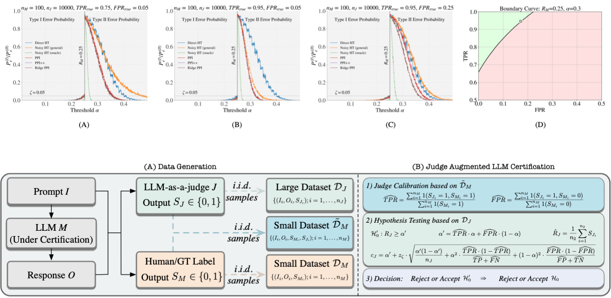
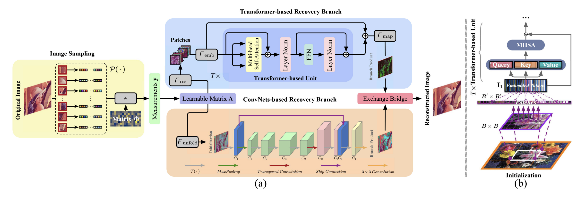
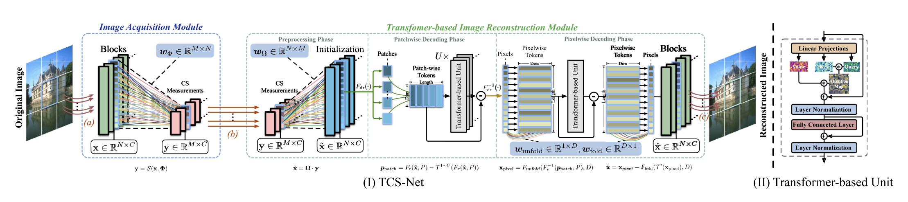
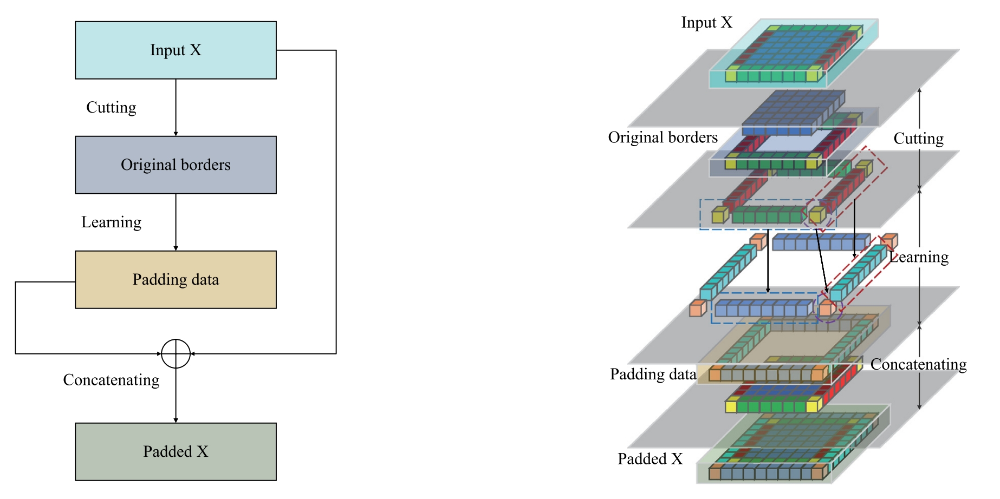
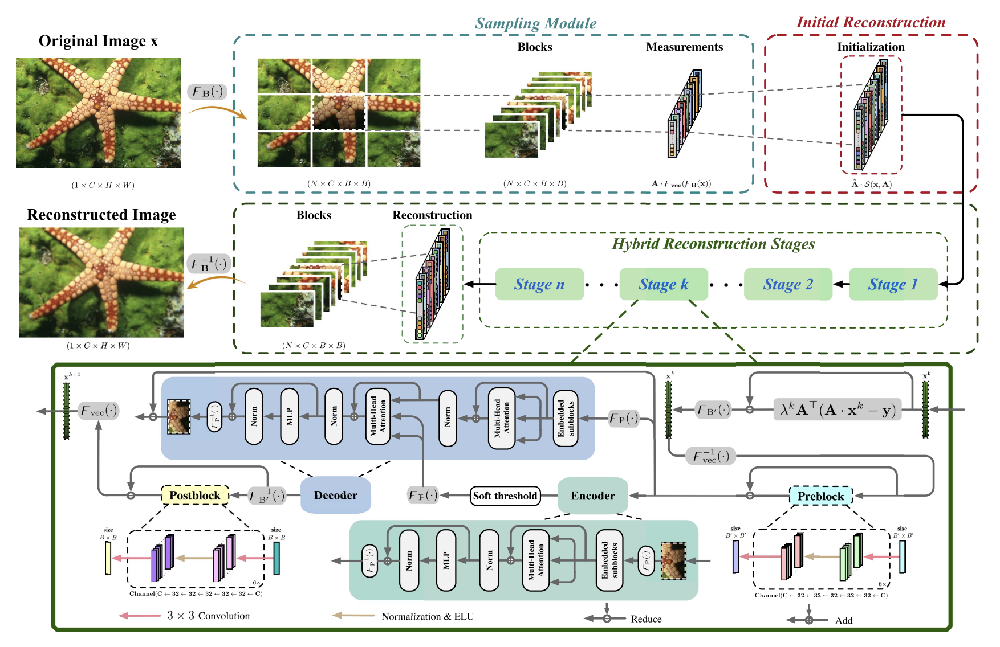

|
Experiences
2025-10 --> 2026-01: Machine Learning Engineer Internship @ Advanced AI Lab, Samsung R&D Institute UK (SRUK).
2024-10 --> 2025-03: Teaching Assistant @ Applied Machine Learning Systems, University College London.
2024-10 --> 2025-01: Teaching Assistant @ Data Acquisition and Processing Systems Teaching Assistant in Data Acquisition and Processing Systems, University College London.
2024-10 --> now: Ph.D. student @ IIML Lab, Department of Electronic and Electrical Engineering, University College London, advised by Prof. Miguel Rodrigues.
Topics: AI Reliability; Large Language Models; Machine Learning; Multimodal Learning.
2020-09 --> 2023-06: M.S. student, Northwestern Polytechnical University, advised by Prof. Hongping Gan.
Topics: Compressed Sensing; Machine Learning; Imaging Systems.
|
|

|
Noisy but Valid: Robust Statistical Evaluation of LLMs with Imperfect Judges
Chen Feng†, Minghe Shen†,
Ananth Balashankar, Carsten Gerner-Beuerle, Miguel R. D. Rodrigues
† Equal contribution.
International Conference on Learning Representations (ICLR), 2026
[Paper]
We introduce a “Noisy but Valid” testing framework that uses a small human-labeled calibration set to estimate judge error rates and applies a variance-corrected threshold to large judge-labeled data. Our method guarantees finite-sample Type-I error control despite calibration uncertainty. We provide theoretical conditions for improved power, empirical validation on benchmark datasets, and quantify the gap to an ideal “Oracle” judge—offering the first systematic treatment of certification with imperfect LLM evaluators.
|
|

|
MTC-CSNet: Marrying Transformer and Convolution for Image Compressed Sensing
Minghe Shen, Hongping Gan, Chunyan Ma, Chao Ning, Hongqi Li, and Feng Liu
IEEE Transactions on Cybernetics, 2024
[Paper]
[Code]
We propose MTC-CSNet, a hybrid dual-path framework combining a lightweight ConvNet branch for local feature extraction and a Transformer branch for global correlation modeling. A bridging unit adaptively fuses both features for high-quality reconstruction.
|
|

|
From patch to pixel: A transformer-based hierarchical framework for compressive image sensing
Hongping Gan, Minghe Shen, Yi Hua , Chunyan Ma, and Tao Zhang
IEEE Transactions on Computational Imaging, 2023
[Paper]
[Code]
We propose TCS-Net, a hierarchical Transformer-based framework for image CS using a patch-to-pixel strategy. It includes a learnable acquisition module and a multi-stage reconstruction module that progressively decodes measurements from patch-level structure to pixel-level details.
|
|

|
Learning-based padding: From connectivity on data borders to data padding
Chao Ning, Hongping Gan, Minghe Shen, Tao Zhang
Engineering Applications of Artificial Intelligence, 2023
[Paper]
[Code]
We propose learning based padding that predicts border values from feature map context using lightweight convolution (LPC) and attention (LPA) modules, providing a generic plug and play replacement for zero padding that consistently improves accuracy on image classification and semantic segmentation across diverse backbones.
|
|

|
TransCS: A transformer-based hybrid architecture for image compressed sensing
Minghe Shen, Hongping Gan, Chao Ning, Yi Hua, and Tao Zhang
IEEE Transactions on Image Processing, 2023
[Paper]
[Code]
We propose TransCS, a Transformer-based hybrid framework for high-quality image CS. It uses a trainable sensing matrix for data-driven sampling and a customized ISTA-based Transformer backbone to model global dependencies during iterative reconstruction. An auxiliary CNN captures local image features.
|
|
Honors and Awards
First Prize for Natural Science Academic Papers in Taicang City, China. (2022-2023)
Outstanding Graduate @ Northwestern Polytechnical University, China.
|
|
Academic Services
Conference Reviewer: ICLR, ICCV, ACL
Journal Reviewer: IEEE TIP, IEEE TCI
|
|